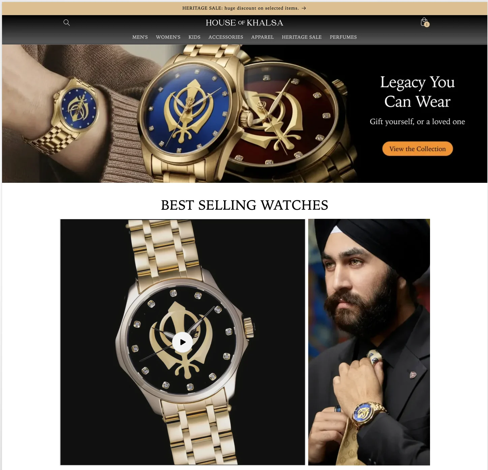
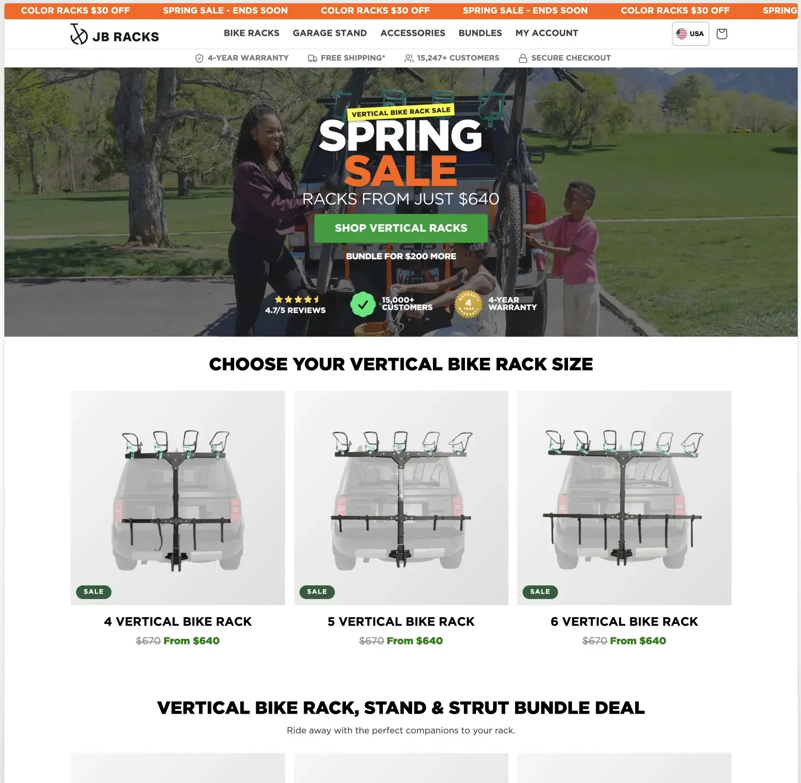
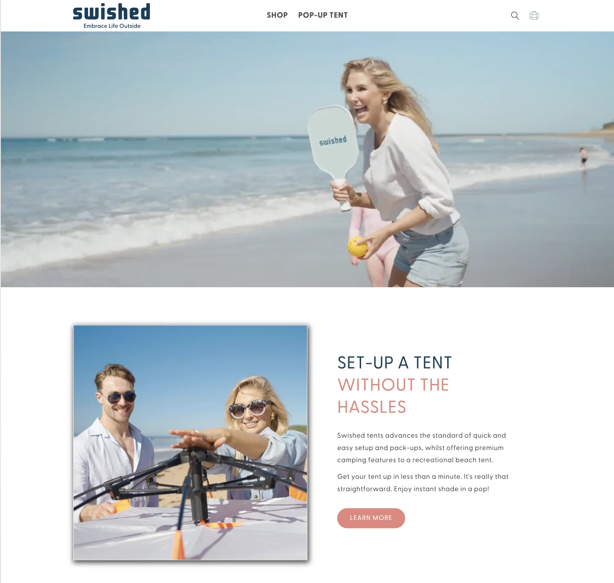
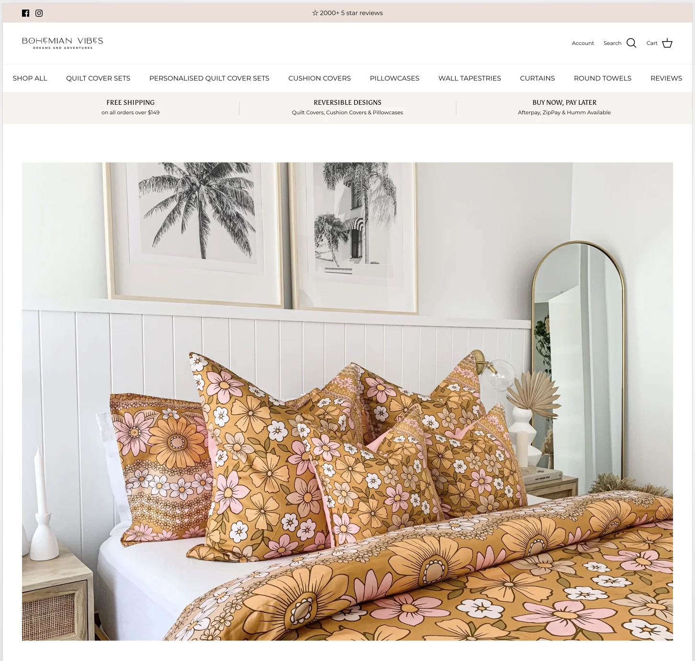
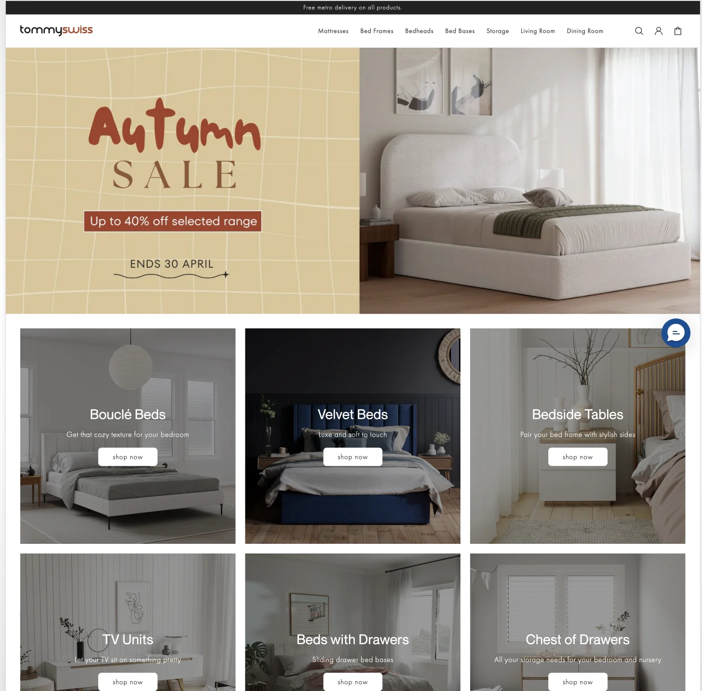

A decade of Shopify case studies — what the brand needed, what I built end-to-end, and what kept the operation running long after launch day.

House of Khalsa was a brand-new venture when I came on. They needed a Shopify storefront that could carry the weight of a heritage product line — premium watches with cultural meaning — without the typical eCommerce site clutter. I built it end-to-end from a blank theme.
What started as a clean storefront has grown into a full operation. I lead all ongoing development, run the CRO testing program, own the Klaviyo email infrastructure, manage the affiliate and B2B programs, and coordinate with suppliers and 3PL partners on fulfillment.
The technical SEO work has been a multi-quarter project: schema markup, site structure, internal linking, Core Web Vitals. The result is a storefront that feels premium and converts.

JB Racks needed two regional storefronts — US and Australia — that shared a brand but operated independently. I built both Shopify stores from scratch and continue to run optimization, app integration, and CRO testing across both.
The challenge was keeping the two regions in sync without duplicating effort. App integrations, theme updates, and Klaviyo flows all had to work cleanly on both sides without becoming a maintenance burden.

A multi-region DTC brand spanning Australia and the UK. I built and maintained both Shopify stores, led front-end updates and CRO testing, and ran the Klaviyo email program across the two regions.
On top of development, I delivered end-to-end customer support over five years — email, chat, refunds, escalations. That kind of dual role lets me design and build with a real understanding of what customers actually struggle with on a live storefront.

Seven years on a single store. I built Bohemian Vibes from scratch in 2016 and maintained it through dozens of theme updates, hundreds of CRO tests, and the full lifecycle of a growing DTC fashion brand.
Long client relationships shape how I work. You can't fake performance over seven years — every decision compounds. The work covered development, email marketing, fulfillment, and post-sale operations.

My longest-running store-ops role. Tommy Swiss covered the full eCommerce stack — storefront development, catalog setup, supplier coordination, fulfillment workflows, and end-to-end customer service.
Seven years on the same brand taught me to design for operations, not just the homepage. Storefront decisions show up in support tickets a quarter later — that's where the real cost of bad UX lives.
Across a decade on Upwork, I delivered full Shopify builds, redesigns, and ongoing maintenance for over 100 different clients — DTC brands, boutique stores, agency overflow work, and one-off rescue projects.
The variety taught me what stays the same and what changes. Every store needs a fast checkout, working email flows, and clean inventory. Almost everything else is unique.
View Upwork profile →